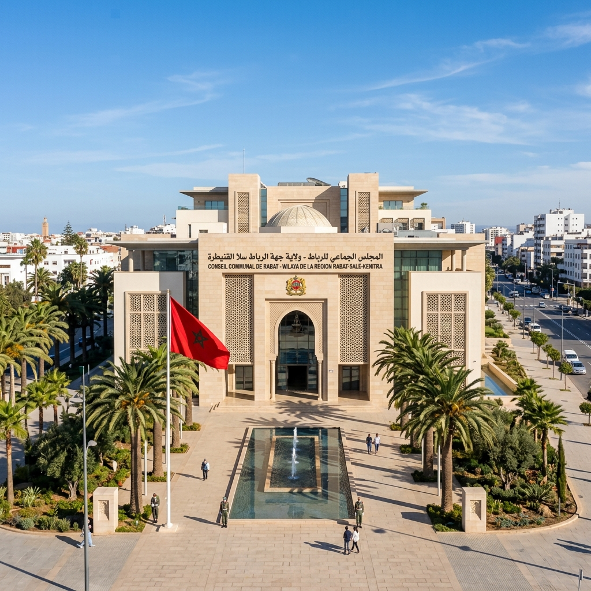

15 مارس 2026
المجلس الجماعي للمضيق يصادق على مشاريع جديدة
خلال الدورة الاستثنائية، تم المصادقة بالإجماع على ميزانية التهيئة الحضرية للشريط الساحلي...
التفاصيلمدينة عريقة، رؤية مستقبلية، وخدمات في متناول المواطنين والمقاولات، نرتقي بها نحو الأفضل معاً.
باقة من الخدمات الإدارية المصممة لتسهيل مسطرة قضاء أغراضكم بكفاءة وسرعة
الولوج إلى المنصات الرقمية لتقديم الطلبات واستخراج الوثائق الإدارية عن بعد.
معلومات مفصلة حول الجبايات المحلية، وكيفية وتواريخ تسديد الضرائب.
اطلع على أحدث القرارات والمراسيم الصادرة عن رئيس المجلس الجماعي.
دليل مفصل لساعات عمل شبابيك الجماعة وتوزيع المرافق العمومية وعناوينها.
تلتزم جماعة المضيق بمبادئ الشفافية والتدبير العقلاني من خلال إشراك المواطنين و توفير المعلومات بكل مصداقية.

تابعوا آخر المستجدات والإعلانات الخاصة بمدينة المضيق
خلال الدورة الاستثنائية، تم المصادقة بالإجماع على ميزانية التهيئة الحضرية للشريط الساحلي...
التفاصيل
في إطار دعم الرياضة المحلية، تم توزيع الجوائز على الفرق المشاركة في الدوري الرمضاني المنظم بملاعب القرب...
التفاصيل
تعلن جماعة المضيق عن فتح باب وضع ملفات الدعم المالي واللوجيستي لجمعيات المجتمع المدني النشيطة في المجال البيئي...
التفاصيل